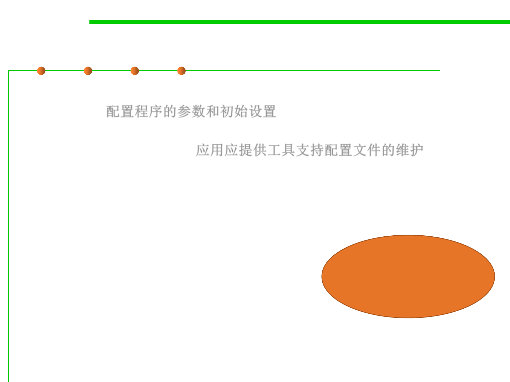

2.2 Process, Systems, and Tools of Software Construction
(3) Configuration languages
▪ Configuration files configure the parameters and initial settings for
programs.配置程序的参数和初始设置
– Applications should provide tools to create, modify, and verify the syntax of
their configuration files; 应用应提供工具支持配置文件的维护
– Some computer programs only read their configuration files at startup.
Others periodically check the configuration files for changes.
▪ Purpose example:
– Deployment environment settings
– Variants of application features
– Variants of connections between components
▪ Configuration language examples:
To separate
stable and
unstable parts
– Key-Value texts (.ini, .properties, .rc, etc)
– XML, YAML, JSON